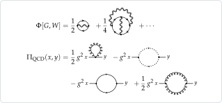
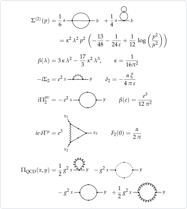
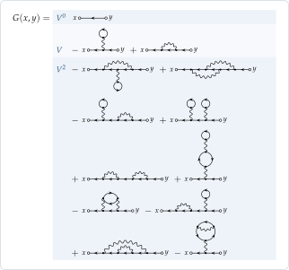
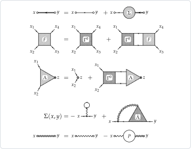
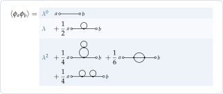

What it does
FunctionalDiagrams is a Mathematica package that derives Feynman diagrams the way one does on paper: from a generating functional and an interaction, by functional derivatives with respect to the sources and the propagators, with the fermion signs of the Grassmann algebra and the symmetry factors that the derivatives produce. It is meant for many-body physics and effective actions (Luttinger–Ward functionals, vertices, Bethe–Salpeter, parquet and Hedin's equations, GW, pairing), and also reaches relativistic field theory: φ⁴ theory and one-loop QED in dimensional regularization, and the diagrams of QCD.
The diagrams it produces can be compared up to relabelling, sorted into classes (connected, one- and two-particle irreducible, skeleton, reducible in a channel), differentiated again, checked against exact equations, evaluated in a few common cases, and drawn in Mathematica or exported as TikZ. Every step is worked out for φ⁴ theory and for the electron gas. Checks says how the results are tested, and Related software how the package differs from FeynArts, QGRAF, FeynCalc and DoFun.
Each panel is drawn by the package from results it computes; the showcase derives and checks all of them.


Exact equations
Drawn with blobs and checked order by order against perturbation theory: Dyson, Bethe–Salpeter, the vertex Λ of the density, and the parquet decomposition of the full vertex F.


Screening
Hedin's equations (the double wavy line is the screened interaction W), and the 2PI functional Φ[G, W] of the dressed lines (here the wavy ones are W) with its derivatives: the first diagram gives the GW approximation, the next ones its vertex corrections.

Pairing
With the Nambu superfield (ψ, ψ̄) the anomalous propagators (lines with two arrows) are variables of Φ: the first order of Φ, the Gor'kov equations, and the Hartree–Fock self-energy and the BCS gap Δ.

Field theory
φ⁴ theory in dimensional regularization: the two-loop self-energy with its pole, and the β function. One-loop QED: the three 1PI functions, with δ₂, β(e) and the anomalous magnetic moment. QCD: the one-loop gluon self-energy.
Map of the functions
The public functions by their role in a calculation: declare the symbols, write a functional, differentiate it, then classify, draw and evaluate the diagrams.
133 public names · 551 dependencies · version 2.5.0
Open the interactive mapScope. The package computes exact symbolic sums of diagrams in the space of labels; it is not a program for the numerical evaluation of Feynman integrals. It carries out the frequency sums at finite temperature, leaving the momentum integrals symbolic, evaluates the loop integrals that reduce to nested one-loop ones in dimensional regularization, and the one-loop diagrams of QED. The number of diagrams grows factorially with the order: the Green function of the electron gas has 706 diagrams at fourth order and 8162 at fifth (the FAQ says how long they take). The pictures follow rules made for many-body diagrams and trees of vertex functions; other diagrams get a general layout, readable but not always as in a textbook.
A first example
Needs["FunctionalDiagrams`"]
(* free fermions, G0 = -<psi psibar>, and a two-body interaction V between densities *)
DeclareGrassmannSource[eta, etabar];
DeclareField[psi, etabar]; DeclareField[psibar, eta, -1];
Z0 = Exp[-IntegralOver[G0[x, y] etabar[x] ** eta[y], {x, y}]];
DeclareSymmetric[V]; DeclareInteractionLine[V]; DeclareDirectedPropagator[G0, G];
interaction =
1/2 IntegralOver[V[x, y] psibar[x] ** psibar[y] ** psi[y] ** psi[x], {x, y}];
(* the Green function to second order: 1 + 2 + 10 diagrams, no vacuum bubbles *)
DiagramPlot[
-PerturbativeCorrelationFunction[Z0, {psi[x], psibar[y]}, interaction, 2], {x, y}]

DiagramPlot draws it, its orders in bands. A wavy line stands for −V, so that the number in front of a picture times the values of its lines is the term.(* the Luttinger–Ward functional and its derivatives: Sigma(x, y) = dPhi/dG(y, x) and
Gamma0(x1, x2; x3, x4) = dSigma(x1, x2)/dG(x4, x3), the irreducible vertex
(the shortcuts SelfEnergy and IrreducibleVertex give the same) *)
Phi = LuttingerWardFunctional[Z0, interaction, 2, G0 -> G];
DiagramPlot[Phi]
DiagramPlot[FunctionalDerivative[Phi, G[y, x]], {x, y}]
DiagramPlot[FunctionalDerivative[Phi, G[x4, x3], G[x2, x1]], {x1, x2, x3, x4}]

(* phi^4 theory: a real boson with the free propagator D0 = <phi phi>_0 and the interaction
lambda/4! phi^4; its propagator to second order: 1 + 1 + 3 diagrams *)
DeclareSource[J]; DeclareField[phi, J]; DeclareSymmetric[D0]; DeclareCoupling[lambda];
Z0phi = Exp[1/2 IntegralOver[J[x] D0[x, y] J[y], {x, y}]];
DiagramPlot[PerturbativeCorrelationFunction[Z0phi, {phi[a], phi[b]},
lambda/4! IntegralOver[phi[z]^4, {z}], 2], {a, b}]

DeclareCoupling), so that the tadpole has the weight ½.The guided tour (download the notebook) goes on from here in thirteen short sections: the effective actions, the Bethe–Salpeter and parquet equations, pairing, Hedin's equations and GW, and then linear response, Matsubara sums, phonons, disorder, dimensional regularization, QED and QCD. The showcase covers everything in more depth; every picture and number in it is computed by the package.
Checks
875tests in the last run, all passed
The results are checked against each other, order by order, and the showcase reports every residual. For the electron gas and φ⁴ theory to third order these include the Dyson equation and the linked-cluster theorem, Σ[G] against the skeleton part of the perturbative Σ, the Ward identity, the Bethe–Salpeter and parquet equations in every channel, the Schwinger–Dyson, vertex and Hedin equations, and a Hubbard–Stratonovich theory against the original one. The evaluation is checked against numbers: frequency sums against brute-force sums, imaginary parts against the cutting rules, loop integrals against numerical integration in non-integer dimension, and the renormalization of φ⁴ theory and of one-loop QED against the textbook results (β functions, anomalous dimensions, the Ising exponents at the Wilson–Fisher fixed point, Z₁ = Z₂, the anomalous magnetic moment). The code of the showcase, of the wiki and of the first example above is run as printed, and gives what the page shows after it (Development/check_showcase.wl, check_wiki.wl, check_readme.wl).
Installation
- Mathematica 12.1 or later
- the Wolfram Language alone: nothing to compile, no other package
-
Install the paclet of the latest release, once
PacletInstall["https://github.com/n4sd4q/FunctionalDiagrams/releases/download/v2.5.0/FunctionalDiagrams-2.5.0.paclet"] -
Load it in every session
Needs["FunctionalDiagrams`"]In a notebook the package asks
api.github.comonce a day, in the background, whether a newer release is out;$FunctionalDiagramsUpdateCheck = FalsebeforeNeedsturns this off. -
Open the guided tour
A notebook to run cell by cell; the paclet carries it, with the two PDFs:
NotebookOpen[PacletObject["FunctionalDiagrams"]["AssetLocation", "Examples"]]Or download it:
Examples.nb.
Other ways (the .paclet file downloaded by hand, a clone of the repository, the single
file), updating and removing, and the usual problems: the wiki's Installation
page.
Documentation
The two PDFs open in the browser. Every picture and number in the showcase, and every example in the manual, is computed by the package.
How to cite
If you use FunctionalDiagrams in published work, please cite it as described in CITATION.cff (GitHub shows a Cite this repository button), for example
@software{Africani_FunctionalDiagrams,
author = {Africani, Nazzareno},
title = {{FunctionalDiagrams}: functional derivatives and {Feynman}
diagrams in {Mathematica}},
year = {2026},
url = {https://github.com/n4sd4q/FunctionalDiagrams}
}